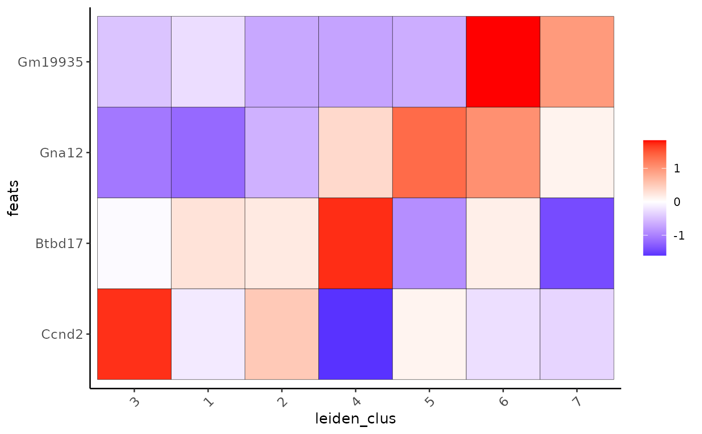

Creates heatmap for features within aggregated clusters.
Usage
plotMetaDataHeatmap(
gobject,
spat_unit = NULL,
feat_type = NULL,
expression_values = c("normalized", "scaled", "custom"),
metadata_cols = NULL,
selected_feats = NULL,
first_meta_col = NULL,
second_meta_col = NULL,
show_values = c("zscores", "original", "zscores_rescaled"),
custom_cluster_order = NULL,
clus_cor_method = "pearson",
clus_cluster_method = "complete",
custom_feat_order = NULL,
feat_cor_method = "pearson",
feat_cluster_method = "complete",
gradient_color = NULL,
gradient_midpoint = 0,
gradient_style = c("divergent", "sequential"),
gradient_limits = NULL,
x_text_size = 10,
x_text_angle = 45,
y_text_size = 10,
strip_text_size = 8,
title = NULL,
plot_title = deprecated(),
show_plot = NULL,
return_plot = NULL,
save_plot = NULL,
save_param = list(),
default_save_name = "plotMetaDataHeatmap"
)Arguments
- gobject
giotto object
- spat_unit
spatial unit (e.g. "cell")
- feat_type
feature type (e.g. "rna", "dna", "protein")
- expression_values
expression values to use (e.g. "normalized", "scaled", "custom")
- metadata_cols
annotation columns found in pDataDT(gobject)
- selected_feats
subset of features to use
- first_meta_col
if more than 1 metadata column, select the x-axis factor
- second_meta_col
if more than 1 metadata column, select the facetting factor
- show_values
which values to show on heatmap (e.g. "zscores", "original", "zscores_rescaled")
- custom_cluster_order
custom cluster order (default = NULL)
- clus_cor_method
correlation method for clusters, default to "pearson"
- clus_cluster_method
hierarchical cluster method for the clusters, default to "complete"
- custom_feat_order
custom feature order (default = NULL)
- feat_cor_method
correlation method for features, default to "pearson"
- feat_cluster_method
hierarchical cluster method for the features, default to "complete"
- gradient_color
character. continuous colors to use. palette to use or vector of colors to use (minimum of 2).
- gradient_midpoint
numeric. midpoint for color gradient
- gradient_style
either 'divergent' (midpoint is used in color scaling) or 'sequential' (scaled based on data range)
- gradient_limits
numeric vector with lower and upper limits
- x_text_size
size of x-axis text
- x_text_angle
angle of x-axis text
- y_text_size
size of y-axis text
- strip_text_size
size of strip text
- title
character. title for plot, defaults to cell_color parameter
- plot_title
deprecated. Use title param
- show_plot
logical. show plot
- return_plot
logical. return ggplot object
- save_plot
logical. save the plot
- save_param
list of saving parameters, see
showSaveParameters- default_save_name
default save name for saving, don't change, change save_name in save_param
Details
Creates heatmap for the average expression of selected features in the different annotation/cluster groups. Calculation of cluster or feature order is done on the provided expression values, but visualization is by default on the z-scores. Other options are the original values or z-scores rescaled per feature (-1 to 1).
See also
plotMetaDataCellsHeatmap for numeric cell annotation
instead of feature expression.
Examples
g <- GiottoData::loadGiottoMini("visium", verbose = FALSE)
plotMetaDataHeatmap(g,
metadata_cols = "leiden_clus",
selected_feats = c("Gna12", "Ccnd2", "Btbd17", "Gm19935")
)
